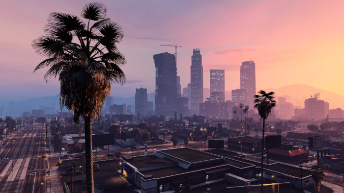
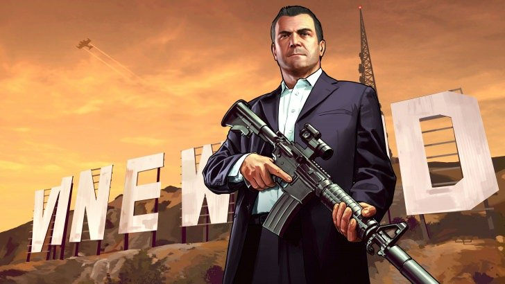
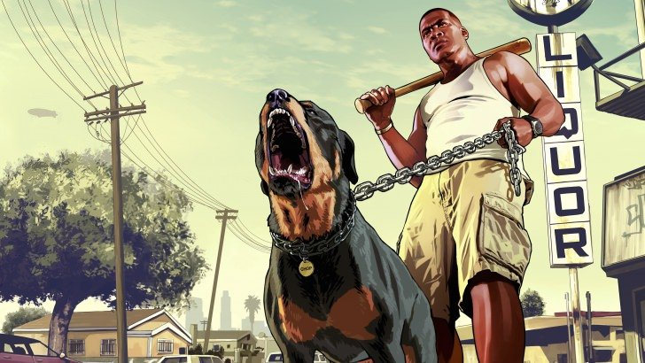
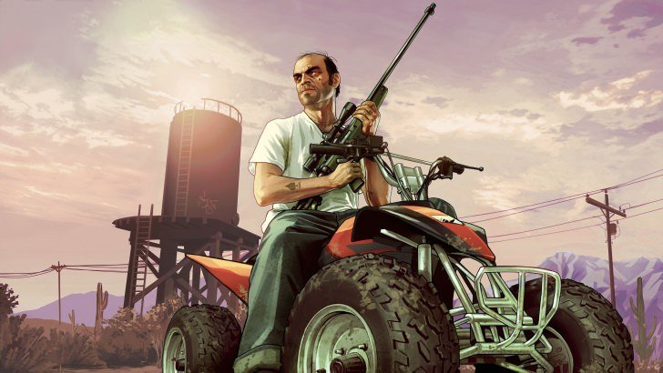

Grand Theft Auto V é um jogo eletrônico de ação-aventura desenvolvido pela Rockstar North🔗 e publicado pela Rockstar Games🔗 em 2013. O jogo se passa na cidade fictícia de Los Santos, baseada em Los Angeles, e segue a história de três criminosos, Michael De Santa, Franklin Clinton e Trevor Philips, enquanto eles planejam e executam roubos perigosos e elaborados.
O jogo oferece uma jogabilidade de mundo aberto que permite aos jogadores explorar a cidade, completar missões e interagir com personagens não jogáveis.
Michael De Santa
Michael é um ex-criminoso que entrou no programa de proteção a testemunhas após testemunhar contra seus antigos parceiros em um assalto. Ele é casado e tem dois filhos, mas sua vida pacífica no subúrbio de Los Santos o deixa entediado e insatisfeito. Ele é atraído de volta para o mundo do crime quando conhece Franklin, um jovem ladrão de carros que ele decide treinar.
Franklin Clinton
Franklin é um jovem afro-americano que trabalha em uma loja de carros usados em Los Santos. Ele é um habilidoso ladrão de carros e está procurando uma oportunidade para avançar em sua carreira criminosa. Ele conhece Michael em uma de suas missões de roubo de carros e os dois se tornam parceiros em vários assaltos.
Trevor Philips
Trevor é um criminoso violento e instável que dirige uma operação de tráfico de drogas em Blaine County, uma área rural ao norte de Los Santos. Ele e Michael trabalharam juntos em um grande roubo anos antes, mas depois perderam contato. Trevor reencontra Michael durante o jogo e, apesar de suas diferenças, eles decidem trabalhar juntos novamente em alguns dos assaltos mais perigosos do jogo.
Existem várias maneiras diferentes de jogar e completar Grand Theft Auto V, com múltiplos finais possíveis. No entanto, para que todos os personagens saiam vivos, o jogador deve escolher o final C.
No final C, Michael, Franklin e Trevor trabalham juntos para derrubar seus inimigos e sobrevivem ao confronto. Eles conseguem recuperar o dinheiro roubado e se separam, decidindo seguir caminhos diferentes. Michael promete deixar o crime e reconstruir seu relacionamento com sua família, Franklin é promovido a um papel mais importante na gangue de Lamar e Trevor decide se mudar para um novo estado para começar uma nova vida.
O final C é considerado o final "canônico" do jogo e é o único em que todos os três protagonistas sobrevivem.